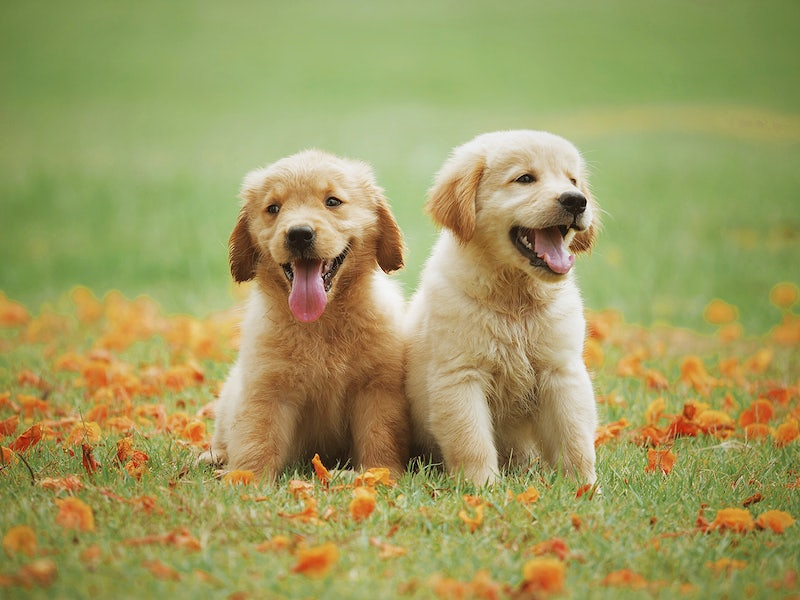

Ask any dog owner which dog breed they think is the cutest and, chances are, they’d award the title to their very own pup. (As they should!). Every dog is fetching in their own right, it’s true, but some breeds have gained a reputation for being dog-gone adorable. From teeny-tiny corgis to fluffy huskies, we’ve rounded up eight of the cutest dog breeds that make us want to buy them all the toys and treats. Thinking about welcoming one of these breeds into your home? Check out this list for our recommendations for the best natural dog treats for your furry friend!
Copy from pawlovetreats